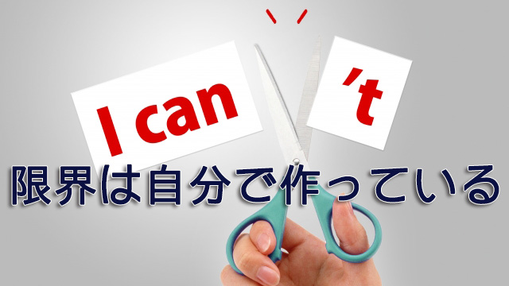

先日趣味でフルマラソンに出場したことがあるという人と話した。
彼によればそれまでマラソンの経験はなかったが一度走ったことで「自分は30～35キロ地点でエネルギー的に限界が来る」と知ったと言う。だから2度目以降はそこをどうクリアするかが課題と見据えて対応策を練ったらしい。ただ…と彼は続けた。「体験を重ねることで逆に30キロ地点で落ちるのが前提となった」
つまり自分で限界を設けていることに気が付いたというわけだ。そこで彼はその「限界」をさらに押し広げる努力をすることで、タイムを短縮するという目的をクリアしたと話してくれた。
この人はかつて他の種目（球技）でオリンピックにも出たことがあるアスリートで、私のような運動オンチはただ「ヘエ～」と感心して聞いているだけだったが「限界は自分で設けている」という言葉には大きく頷けるものがあった。
確かにそうなのだ。「限界とは自分がそう思ったときにそうなる」という言葉が示すように自分が勝手に設けているものだと私も経験上感じている。
私は子どもたちに勉強を教えるという仕事を長く続けてきたが、中学生いや小学5，6年生くらいからすでに「国語が苦手」「算数はできないからムリ」などと自分にレッテルを貼り早々と自らの限界を作り始める。こうしていったん自己の限界を設定してしまうとこれを解除するのは難しい。それがひとつのアイデンティティになるからだ。
もちろん誰だって最初から限界を作っているわけではない。多くは成長過程で親や先生など「権威ある者」から「お前は○○がダメだ」とか、逆に何かができても「いい気になるんじゃない」などと可能性を否定する言葉を浴びせられてきた結果、自分でもそう思い込むことになったと言うのが真相だろう。
そうしてでき上がった限界のレベルは人によって様々だし、同じ人であってもその時々によって変動することもある。
それでも「自分には限界がある」という思いは残ってしまう。
この限界を解除するには他人の助けが有効で、それができるのが良い教師、コーチということになる。
良いコーチは限界を解除する
しかし残念なことに学校の先生方の多くは、子どもたちの限界を引き上げることに熱心ではなく、それどころかむしろ限界を引き下げている節がある。
それが端的に表れるのは例えば受験指導の現場で、生徒が志望校を決める際「お前の偏差値は50なのだからそれより下を受けろ」などと安全策を提示することが多い。
先生にしたら、ムヤミに高望みして不合格になるよりレベルを下げても確実に合格するほうが良いと判断するのだろう。あるいは不合格を担任のせいにされるのは嫌だとか色々言い分があるだろうが、結局のところ生徒に限界を設定し本来の能力を引き出させないようにしていることに変わりない。いかにもお役所的発想だ。
私ならこういうとき現状が50ならまず55を目標に設定し、52～53に上がってきたら57、58を狙わせ最終的には60を目標にする。限界と思い込んでいるものを少しずつ解除することで、生徒自身が限界は超えられると理解すれば後は自らの努力で伸びていくからだ。
私事で申し訳ないが、ちょうど去年の今頃私の息子が大学受験を控え伸び悩んでいたときの話だ。私は我が子の勉強に口出しはしない主義なので妻に息子の志望校を尋ねたところA大だという。A大はソコソコ難関だが息子のやりたい分野の学部を考えると、より難関のB大の方がふさわしいのではないかと感じそう言うと妻いわく「本当はB大に行きたいらしいけど自信がないんじゃない？」とのこと。
情けない奴だとは思ったが私的には息子がA大でもどこでも良い。入ってからのほうが大事だというのが本音だった。ただ受験テクニック的にはB大を目指したほうがA大合格には有利である。つまりより上を目指さない限りA大の合格もおぼつかない、まして本当はB大（行けたら行きたい）なら堂々とB大と言えば良いのにと思った。しかし息子は親の言うことなど聞かないだろう。
そこで私は自分の塾の2人のスタッフに息子と面談してくれないかと頼んだ。それは息子にB大を受けるよう説得して欲しいからではなく、この時期特有の受験生の迷いを払拭し改めて受験に前向きに取り組んでもらいたかったからだ。
事実私はスタッフたちに「受験指導のプロとして気づいたことを正直にアドバイスして欲しい」と言っただけだった。
彼らは息子と面談すると、いま使っている教材や模試の偏差値を提示させて細かいアドバイスをする一方「なぜB大受けないの？」と尋ねてくれた。息子の返答は「漢文があるからムリ！」のひとこと。息子は漢文がまるで不得意なのだ。そこでスタッフは漢文の教材を持って来させると「これでよい。漢文はまだ間に合うからこの教材を使い続けよ」と言った。さらに「現役生はこれから伸びる。偏差値的には厳しいが伸び代を考えるとギリギリ間に合う可能性もあるから受験校に加えるべき」と明快に判定を下した。
アドバイスはこの日限りだったが、これを境に目の色が変わった。あっさりB大を第1志望と宣言し(笑)ハタから見ても分かるほど勉強に精を出し始め何とかB大合格を果たした。当初第1志望に挙げていたA大も合格。
的確なアドバイスをしてくれたスタッフのおかげとも言えるが大切なことはこれを契機に息子が自ら設定していた限界を解除したことにある。
自分は漢文ができない→だから漢文の出題比率が高いB大はムリ！ これが息子の設定した限界意識だった。
長々と書いたが無論息子の自慢話をしているのではない。私自身が日常的に経験しているお馴染みの例に過ぎない。
多くの人は「人間には限界がある」という思いに縛られている。
だから人を育てる立場にある者は―学校の教師であれスポーツコーチであれ―当人が自らを縛り付けている限界意識の縄をほどいてより大きな可能性に気づかせることが大切なのに、現状は先に述べた通り真逆をやっていることが多い。
これは指導者自らが限界意識に縛られているからだ。
経験主義が限界をつくる
もう一つ、自らを限界のワナに落とし込む要素がある。それは経験(体験)主義だ。
何事も経験することは人間の幅を広げ技量の向上に役立つ。それ故人は容易に経験主義に陥りやすい。しかし経験は人間にとって制限となることも多いのだ。
先のフルマラソンのアスリートの言葉「体験を重ねることで逆に30キロ地点で（体力が）落ちるのが前提になった」が示す通り、経験が重なることで「ここが自分の限界」「これ以上は自分には無理」という思いが確固たる信念と化す。
だがよく考えてみれば経験とは過去の記憶、データの積み重ねに過ぎない。過去のデータを絶対不変のものとして固定化すると新しい可能性が開いて行かないことになる。
たとえ過去にいくら成功体験があるとしても次の成功を保証しているわけではない。企業の経営者などがよく「成功体験が邪魔しての失敗」を警告するのもそのためだし、逆にたった1度の失敗で「自分にはどうせできない」とあきらめて2度とチャレンジしないのも、どちらも過去の経験（体験）に縛られているといえる。
だから過去の経験の呪縛を解き放ち自ら設定した限界に気づくことが大事なのだ。そのためには「できない」というのは思い込みではないかと疑ってみること。たとえ苦手だムリだ、自分はこういう人間だからという決めつけを止めてあえて試みること。それによって自らの新しい領域が広がるかも知れない。
一定の年齢になると「自分にはこれしかできない」「あんなことは到底無理だ」と考えて同じことのくり返しに、つまり制限された狭い領域に閉じこもることで安心する傾向があるが残念だと思う。
これしかできない→自分はこういう人間だ→これが自分のスタイルだ。
というように「できない自分」をむしろ正当化しそこにアイデンティティを見い出すのは本人的には快適かも知れないが、それは劣化を意味し人生はますます先細るだろう。生のエネルギーはやがて枯渇する。
だが「限界は自分で設けているに過ぎない」と分かれば意欲は高まる。私は無限を説いているのではない。限界は自分で作るからこそ自由にそのラインは上下させることができると言いたいのだ。
多くの人はあまりに低く自分の限界を設定している。根性や努力ではなく、低すぎるその限界ラインを少しだけ上げるだけで人生の可能性は格段に広がっていく。
そのとき、たとえ年齢や立場がどうあろうと自分はまだ成長していけるという実感と新しい人生を開く喜びを感じるだろう。
人間はいくつになっても成長できるというのは本当だと、私もつくづく実感している。